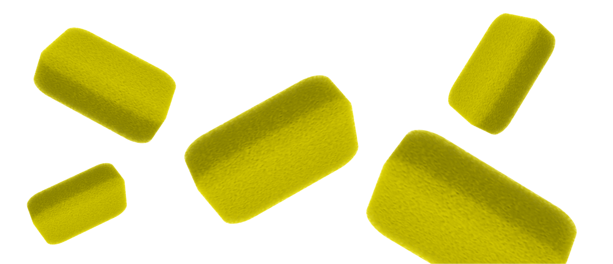

Статьи
Бытовые губки и их замена
Пластик, включая пластиковые пакеты, представляет серьезную проблему для окружающей среды. Они образуют большое количество отходов, которые долго разлагаются и могут наносить вред животным и экосистемам. Осознанное потребление включает выбор альтернативных упаковочных материалов, таких как многоразовые тканевые сумки или биоразлагаемые пакеты, а также максимально сокращение использования пластика в повседневной жизни. Сознательные шаги по сокращению пластикового использования помогают создать более устойчивую и экологически чистую планету.
Бытовая губка может быть источником бактерий и микробов, если ее не заменять регулярно.
 Бытовые губки
Бытовые губкиБытовая губка — это часто использующийся предмет на кухне. Мы используем ее для мытья посуды, столовых приборов и других поверхностей в нашем доме. Однако, несмотря на все ее преимущества, бытовая губка имеет и некоторые негативные свойства.
 Негативные свойства губкиВо-первых, губка может быть источником бактерий и микробов. После использования губки на ней остаются остатки пищи и грязи, которые становятся средой обитания для бактерий. Если губка не заменяется регулярно, то она может стать причиной различных инфекций. Во-вторых, губка может повредить поверхности. Она может повредить керамическую плитку, стеклянные поверхности и другие материалы.
На что заменить?Существует несколько альтернатив, которые можно использовать вместо губки
Микрофибровые тряпки — они хорошо справляются с очисткой и не повреждают поверхности.
Специальные скребки — они предназначены для удаления стойких пятен и загрязнений.
Бамбуковые щетки — они мягко очищают поверхности и хорошо подходят для мытья посуды.
Губки из меламина — они отлично справляются с удалением пятен и загрязнений и не повреждают поверхности.